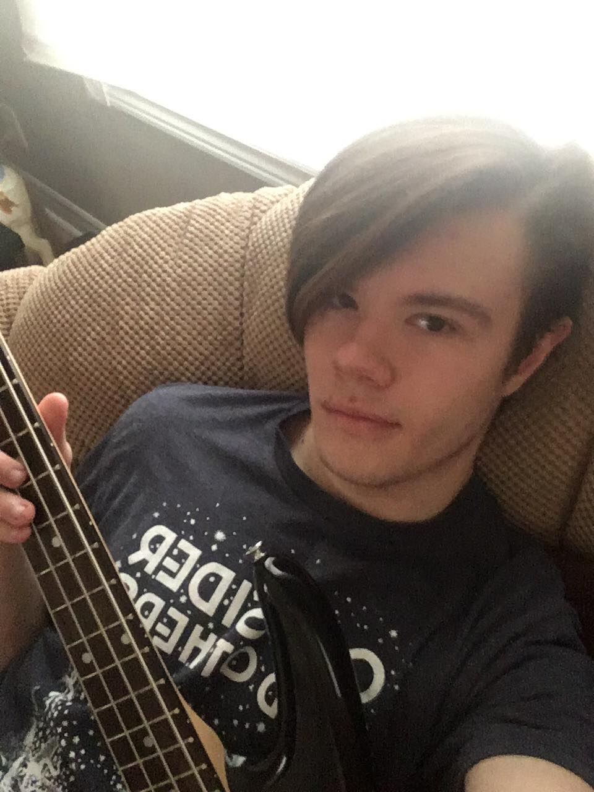

Two Queers is a low budget and totally very original show about various nerd culture pillars. Equal parts news, comedy and thinkpieces, our mission statement is to deliver content that is as entertaining as it is informative. We also run the Multiple Queers podcast, a less formal stream-of-consciousness forum of discussion between cast members.
El Arsenault is an aspiring web developer that enjoys editing videos, they are what the cool kids call *an enby* Them and Angelina created this channel in 2017 hoping to make something big, and they still feel as if they can reach that goal.
Kieran Kirwin’s name is an alliteration like a superhero name or some shit. A Queens University English major, Kieran’s career paths include dying in poverty and being an overqualified grocery bagger. As such, he does what he does best at Two Queers: right pretentious opinion pieces and informal video essays. He also plays bass and enjoys sitting in dark rooms pretending to be award-losing actor Jeffrey Lynn Goldblum.
